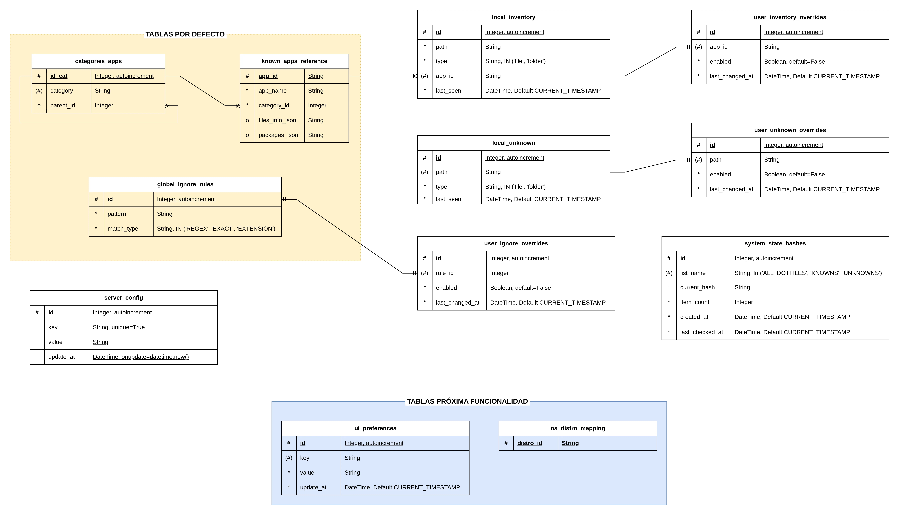

6.1. Base de Datos Local (SQLite Cliente)
El cliente Python implementa una base de datos embebida SQLite gestionada a través del ORM SQLAlchemy. Su objetivo es actuar como caché inteligente, almacenando el estado del sistema y la configuración del usuario para minimizar las lecturas en disco (operaciones I/O pesadas) durante los escaneos.

Figura 3: Diseño preliminar del Modelo Entidad-Relación (ERD) para
el cliente local.
El diseño relacional preliminar se estructura en tres grandes bloques funcionales:
-
Bloque de Configuración (Tablas aisladas):
-
ui_preferences: Almacena el estado de la interfaz gráfica (ej. modo oscuro, tamaño de ventana). -
server_config: Parámetros de conexión a la API REST (URLs, tokens de sesión). -
os_distros_mapping: Mapeo de rutas específicas según la distribución Linux subyacente (Arch, Debian, etc.).
-
-
Bloque Lógico Relacional (El Inventario):
-
categories_apps(1:N): Define la taxonomía del software (ej. Desarrollo, Terminal, Multimedia). Soporta jerarquías medianteparent_id. -
known_apps_reference(1:N): Catálogo de aplicaciones reconocidas por el sistema (incluyendo su mapeo JSON). -
local_inventory(N:1): El núcleo de la persistencia. Registra qué dotfiles existen físicamente en la máquina local (rutas, tipo de archivo) y los vincula a su aplicación correspondiente medianteapp_id.
-
-
Bloque de Rendimiento y Filtrado:
-
global_ignore_rules: Lista de patrones (RegEx, extensiones) que el motor debe omitir, optimizando el rendimiento. -
system_state_hashes: Implementación técnica clave. Almacena hashes del estado de los directorios para determinar, en un coste de tiempo O(1), si ha habido modificaciones desde el último escaneo, evitando procesamientos redundantes.
-